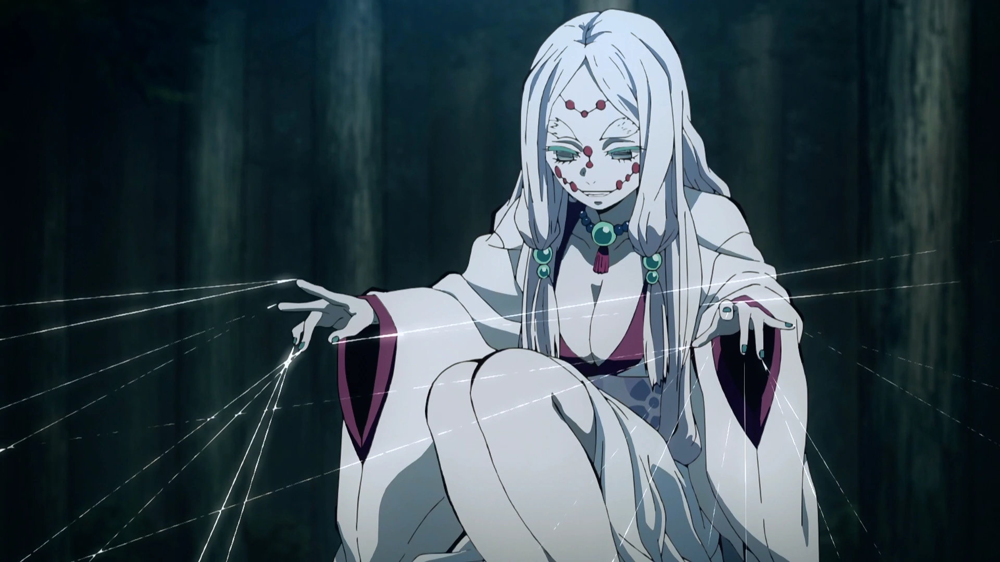

Spider Demon (Mother)
Kanji
蜘蛛鬼「母」
Rōmaji
Kumo oni: Haha
Characteristics
Race
Demon
Human (Formerly)
Gender
Female
Affiliation
Affiliation
Spider Family
Base of Operations
Mount Natagumo
Debuts
Anime Debut
Episode 15
Manga Debut
Chapter 28
Portrayal
Japanese VA
Ami Koshimizu
English VA
Allegra Clark
Spider Demon (Mother) (蜘蛛鬼「母」 Kumo oni: Haha) was a member of the Spider Family.
Appearance
Mother was very similar in appearance to her "son" Rui, having the same milky-white skin, teal eyelashes and nails, and circular, red facial markings. She also possesses a short and curvaceous physique. Additionally, she had bushy eyebrows and long, white hair parted down the middle of her face which was tied with teal orbs into two, thick strands.
Mother wore a lengthy, layered kimono — maroon on the inside layer and white on the outside layer — that exposed part of her chest and was tied with a patterned obi. She also donned a beaded necklace composed of teal and purple orbs and decorative anklets. She also goes barefoot and has black nail polish on her toenails; the lower front of the kimono is open, exposing her legs.
However, it was revealed that this was not her true appearance, as her body was altered to look like Rui's. Her original appearance was completely different from her transformed one, with a much smaller, childlike body compared to her new, more voluptuous figure. Her skin was marked with two maroon lines on each of her cheeks and her eyes were rounder with yellow irises and x-shaped pupils. She also wore her short, black hair parted to the side with bangs framing her face and two, low pigtails.
Personality
Like most demons, Mother was cruel, unfeeling, and murderous towards humans. She ruthless controlled dozens of Demon Slayers through her threads and manipulated them into killing each other. She was also rather sadistic and callous, uncaring that her manipulation brought them prolonged suffering. In spite of this, spending time with Rui's family caused her developed an intense fear for him and Father, both of whom had abused her for being weaker than expected. This abuse was severe enough to make her embrace death instead of having to continue on knowing that both Rui and Father would continue to torment her.
In her final moments, she seemed to have regained some of her feelings and memories as a human and seemed to have been genuinely touched by Tanjiro's kindness, thanking him for giving peace by warning him that a Twelve Kizuki was on the mountain, wishing him to be careful in her last moments.
It was later revealed that compared to the rest of her "family", she was technically the youngest demon of the family (her original appearance being that of a young girl) and was still coping with her previous human feelings and memories, which caused her to cry and grieve many times when remembering them. Due to this she became a target of severe reprimand from Rui, due to her inability to be a proper "Mother" to her "Children", who were all technically older than her.
History
Not much was known about Mother's past as a human, but she was loved and cherished by someone, a young person with a maroon haori and black hair styled in a low cut bang with a ponytail. In her final moments, she seems to have remembered some parts of her life as a human child such as remembering being loved and cherished by this person.
After she became a demon and lost her loved one (the implication is that they somehow died in a rather bloody manner), she took up residence at Mount Natagumo. She would have presumably encountered Rui and was given the chance to become stronger in exchange for playing a role in his "family". She was given the role of being the mother. However, due to being a recently turned demon, she would mourn the loss of her humanity and her loved one, causing both Rui and Father to "punish" her for being weak.
Synopsis
Mount Natagumo Arc Mother was assigned by Rui with the role of protecting Mount Natagumo and her 'family' from the Demon Slayer Corps. Sitting atop a rock in the middle of a clearing, she defended the mountain via numerous threads strewn across the forest. Sensing that Demon Slayers were sent to kill her family, Mother used small spiders to attach her threads to them. With their bodies in her control, she manipulated the Demon Slayers into killing each other, later keeping their bodies attached to use as dolls for fighting against more intruders. As they got closer to her, Mother's threads become harder and her dolls, some of whom were still alive, became stronger. She was confronted by Rui, who asked if she could win and why she is taking so long. Due to her fear of him, she initially did not answer, too afraid to say a response. Rui then threatened to inform Father about the situation if she does not kill the remaining Demon Slayers quickly, which caused Mother to fearfully say she can win. Now in a state of panic, Mother was pushed into using the rest of her dolls and forcing them to fight even harder to kill Tanjiro and Inosuke. The two eventually got closer and encountered her last dolls, including a young girl named Ozaki and another Demon Slayer in agony over his broken body. Mother pushes their bodies to the limit to kill Tanjiro, breaking Ozaki's arm and continuing to attack the Demon Slayers. However, Tanjiro is able to entangle the threads of Ozaki and her comrades by launches them into the tree branches and leaving them hanging by the threads. With Inosuke's help, they disable all of the dolls without killing them. Angered at their failure, Mother resorts to using her strongest doll instead and kills her human dolls by snapping their necks. Enraged, Tanjiro and Inosuke continued through the forest to find her, unknowingly coming across her final doll, a giant headless demon with bladed arms. Though the doll proved much faster and stronger than the controlled Demon Slayers, Tanjiro and Inosuke were able to coordinate a plan together and kill her final doll. Having already given up any form of resistance and willpower to continue fighting, Mother held her arms up awaiting death from Tanjiro's coming attack. Tanjiro, realizing that she no longer has any intention of fighting back, finishes her with the Water Breathing: Fifth Form - Blessed Rain after the Drought instead of the First Form: Water Surface Slash as originally intended; he had opted to use a form that brings no pain after seeing her no longer willing to fight back. Overall Abilities: Mother was a reasonably strong demon, far above the average demon and was a great danger to the Demon Slayers who ventured to Mount Natagumo. Due to her extensive array of webs and numerous spiders, the entire forest of the mountain became her domain, one that was hazardous to anyone unlucky enough to get ensnared in her silk. Because she sat at the centre and was surrounded by her silk and puppets, it made her location very difficult to pinpoint, which was only bypassed by Inosuke's sensitive sense of touch. Shapeshifting: Thanks to the drop of Muzan Kibutsuji's blood provided by Rui, Mother possessed advanced shapeshifting. She was able to completely alter her physical appearance to match Rui, in order to be a part of the Spider Family. However, due to her lack of control over her lingering human emotions, she was prone to accidentally reverting her appearance, which greatly displeased Rui. Regeneration: Like all demons, Mother was armed with powerful regeneration, able to heal severe wounds in mere moments. She endured the abuse of both Father, a hulking demon of incredible strength, and Rui, who tortured anyone who made him angry with his razor-sharp and very hard strands of silk; in both cases, she healed completely. Blood Demon Art Puppetry: Mother could create and manifest threads from the tips of her fingers that can extend to cover an entire mountain. She used her threads in a unique manner; by utilizing them to manipulate bodies like puppets. She achieved this by attaching her strings to her intended victims using small spiders, allowing her to control them from a remote distance. She could even use these strings to somehow bring out the full physical power of her controlled puppet to its maximum, albeit at the cost of putting her puppets through severe physical pain due to it. This ability also allowed her to control the corpses of Demons, as she even acquired and preserved the dead body of a demon and prevented it from disintegrating to ash for use in combat. The closer the strings connected to her are, the more power she can exert over the puppets she manipulates. Spider Manipulation: Mother could create and command small white spiders with red dot like design similar to the physical traits of herself and her "family" to stealthily attach her threads to her intended victims without them noticing. These spiders also have similar traits to demons, as they burn up upon getting stabbed/sliced by a Nichirin Sword.
Tanjiro and Inosuke entered the mountain in order to defeat her and her family. They were met by the sole survivor of the initial massacre, Murata, who informed them of what happened. Soon after, she sent her dolls to kill the trio, but their simple movements were easily evaded. They learned to slice the threads to free them from control and avoid the spiders sent by her, allowing Murata to hold them off as Tanjiro and Inosuke ventured further into the forest.

As Mother panicked upon learning her last weapon was defeated, she looked up to see Tanjiro descending to kill her. In shock of her impending death, she suddenly realized she could be freed from her abuse and surrendered to him, releasing her threads in a final act of embracing death.
After being beheaded, Mother was shocked at how peaceful and painless her death is and was even further surprised and touched by Tanjiro's eyes, which has no malice, hate, or contempt. Instead, she sees nothing but pure kindness and mercy. As she faded away, she remembered all the painful memories and unkind stares her family had given her and vaguely recalls her past as a human, remembering being loved and cherished by someone and as she slowly disintegrates into ash, weakly wondering where that person is now. In return for Tanjiro's kindness, she weakly warns him that one of the Twelve Kizuki is in the mountain and bids him good luck as she dies. Abilities
Fighting Style